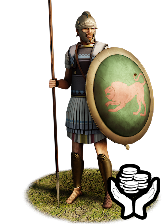
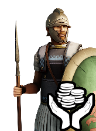
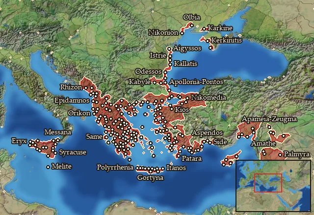

RTR: Imperium Surrectum
RTR: Imperium SurrectumMercenary Hoplites


Mercenary. Hired from a regional pool, not recruited from a building.
Class: spearmen · Category: infantry · Men per unit: 40
Description
Greek Hoplites had been a standard feature of warfare since the 7th Century BC, and their weapons remained essentially unchanged. Their principal weapon was the thrusting spear (dory), eight to nine feet long, with an ash or cornel wood shaft, iron head, and an iron or bronze butt-spike. The centre of the shaft was bound with cord for a secure grip. The spear was usually used in an overarm thrust, but it could also be thrust underarm or even thrown. The secondary weapon of the hoplite was the sword, which was about 60 cm long. The "Argive" shield (called Aspis) was large: 80 cm - 1 meter in diameter, convex, made of wood covered with a thin bronze sheet, and was carried with two handles, a bronze porpax in the centre through which the forearm passes, and a cord at the rim. Hoplites commonly wore greaves, clipped around the legs by their own elasticity, and bronze helmets with cheekpieces and horsehair crests. Over the chiton, the Hellenistic Period hoplite had a non-metallic corselet, the Linothorax. The heavier and more expensive iron cuirass had disappeared since the 5th Century BC, as hoplites sought to be swifter on the battlefield (Dahm, Leuctra 2021, 42). The Linothorakes were wrapped around the body and split below the waist into strips called pteryges (feathers) for ease of movement. As hoplites were required to equip themselves, this cheaper armour had grown popular: a Linothorax could easily be made out of old clothes and thus cost only a fraction of a metal cuirass. The trend was likely pioneered by Alexander’s Hypaspists, who fought in Hoplite equipment with Linothorakes (Heckel, Conquests 2012, 26).
Historical background
While the Hoplite was not only a soldier, but also a citizen with pride and influence, many Greek Hoplites also found fame and wealth abroad, serving as mercenaries. This was especially true for the inhabitants of less densely populated areas or those with a greater population, yet few city states. Finally, mercenary Hoplites could simply hail from war-torn regions dominated by political instability. Hoplite mercenaries are first recorded during the opening stages of the Peloponnesian War: Thucydides reports that Corinth sent 1,600 men, apparently recruited mainly from Achaia and Arcadia, to aid Potidaia on the Chalkidike against the Athenians in 432 BC (Thuk. I, 60, 1-3).
In 404 BC, the Achaemenid usurper Kyros the Younger (423-401 BC) recruited the famous "Ten Thousand" in his unsuccessful bid to win the Persian throne (Diod. XIV, 9, 1-34, 3). Thereafter, large numbers of Greek hoplites were employed by various Great Kings as well as Sikeliote tyrants, especially Dionysios I of Syracuse (r. 405-367 BC) (Diod. XIV, 7, 5-8; 41, 4-96, 4). The Carthaginians, in turn, also became large-scale employers of Greek mercenaries; it is likely that Carthage first began minting coins on Sicily in c. 410 BC so as to pay its Greek mercenaries (Markowitz, Coinage of Carthage, Coinweek 2014). In addition, the wars in mainland Greece itself increasingly required mercenaries. Both Alexander the Great and his adversary, Dareios III (r. 336-330 BC), relied on Greek mercenary Hoplites, as did the warring Diadochi that inherited Alexander's dominions after his death in 323 BC. Trundle (Mercenaries 2004) provides countless examples for all three cases. The employment of Greek mercenaries was driven by an ever-growing demand overseas and paid Hoplite soldiers continued to appear throughout the Hellenistic period.
Stats
| Rank in roster | Rank in roster | Rank in roster | Rank in roster | ||||||||
|---|---|---|---|---|---|---|---|---|---|---|---|
| Men per unit | 40 | ███······· 31% | Attack | 9 | █········· 14% | Charge bonus | 13 | █████····· 53% | Defence | 41 | ████████·· 77% |
| · armour | 10 | ██████···· 55% | · defence skill | 26 | ████████·· 78% | · shield | 5 | ██████···· 58% | Morale | 10 | ███······· 30% |
| Discipline | Low | Training | Highly trained | Upkeep per turn | 603 dn | ████······ 41% |
Weapons
| Primary | Secondary | Primary | Secondary | Primary | Secondary | Primary | Secondary | ||||
|---|---|---|---|---|---|---|---|---|---|---|---|
| Attack | 9 | — | Charge bonus | 13 | — | Type | melee · blade | — | Damage | piercing | — |
| Properties | Light spear (braced against cavalry charges from the front) · +8 attack against cavalry | — |
Defence
| Primary | Secondary | Primary | Secondary | Primary | Secondary | Primary | Secondary | ||||
|---|---|---|---|---|---|---|---|---|---|---|---|
| Total | 41 | — | Armour | 10 | — | Defence skill | 26 | — | Shield | 5 | — |
Condition and terrain
| Hit points | 1 | Ground: scrub / sand / forest / snow | -1 / -1 / -4 / -1 | Charge distance | 30 | Formations | Square |
Technical stats
| Time between blows (primary / secondary) | 2.5 s / — | Extra fatigue in hot climates | 1 | Collision mass per man (1.0 is normal) | 1.12 | Spacing between men: close / loose | 1 × 1.05 m / 2 × 2.4 m |
| Default ranks | 5 |
In battle: Can sap · Very good stamina
Where to hire it
Mercenaries are hired from a regional pool, not recruited from a building. This unit is offered by 11 pools covering 215 regions, at 3,090–3,461 dn to hire and 0–1 experience.

At least one of those pools sells to any faction that has an army in range — no faction restriction.
Some pools additionally restrict it to Asti · Cabyle · Odrysian Kingdom · Seleucid Empire · Seleucid Rebels (Asia Minor) · Seleucid Rebels (Upper Satrapies) · Sparta.
The 215 regions where this unit appears in a mercenary pool
Abilene · Achaia · Achaia Phthiotis · Acheloos · Adramyttenos Kolpos · Aigyssia · Aipeia · Aitolia · Akarnania · Akragas · Akrokeraunia · Akte · Amathousia · Ambrakikos Kolpos · Amphaxitis · Amphilochia · Anatolike Achaia · Anatolike Chalybonitis · Anatolike Kyklades · Anatolike Sikelia · Ano Chaonia · Ano Troias · Antheia · Apteraia · Ardiaia · Argolis · Arik · Arinna · Arkadia · Arktonnesos · Athamania · Atintania · Attike · Auranitis · Bambyke · Basilike Dassaretia · Bisaltia-Krestonia · Bithynia · Boiotia · Boreia Labeataia
…and 175 more.